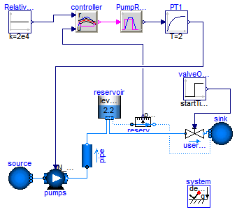
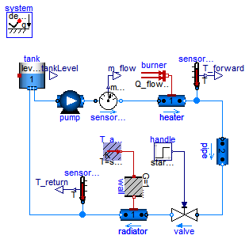
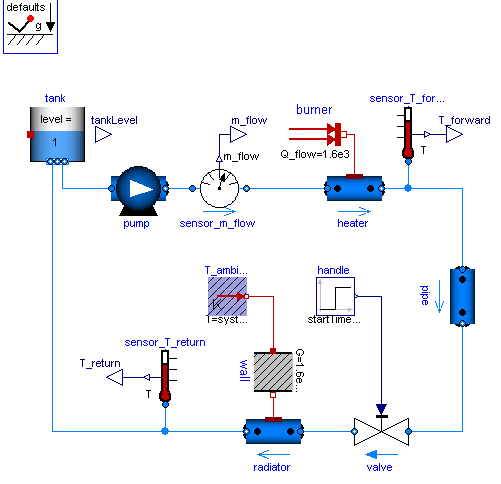
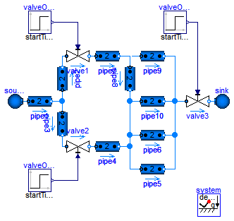
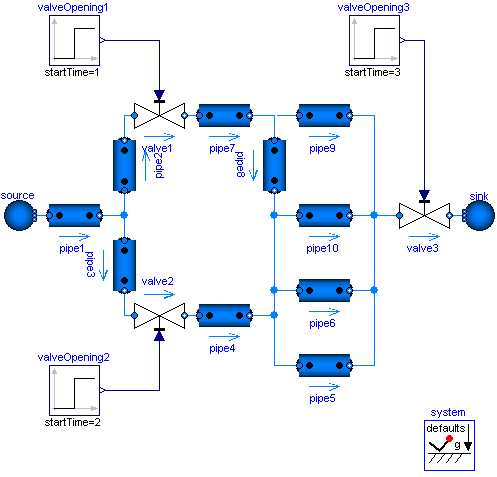
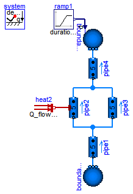
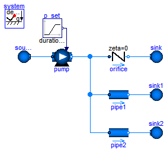

| Name | Description |
|---|---|
| Model of a pumping system for drinking water | |
| Simple model of a heating system | |
| Drum boiler example, see Franke, Rode, Krueger: On-line Optimization of Drum Boiler Startup, 3rd International Modelica Conference, Linkoping, 2003 | |
| Library demonstrating the usage of the tank model | |
| Tank system with controller, start/stop/shut operation and diagram animation | |
| Model of the experimental batch plant at Process Control Laboratory at University of Dortmund (Prof. Engell) | |
| Multi-way connections of pipes and incompressible medium model | |
| Multi-way connections of pipes with dynamic momentum balance, pressure wave and flow reversal | |
| Demo of a heat exchanger model | |
| Library demonstrating the usage of trace substances | |
| Demonstrates the parameterization of a pump and a pipe for given nominal values | |
| A set of examples illustrating when special attention has to be paid |
 Modelica.Fluid.Examples.PumpingSystem
Modelica.Fluid.Examples.PumpingSystem
Water is pumped from a source by a pump (fitted with check valves), through a pipe whose outlet is 50 m higher than the source, into a reservoir. The users are represented by an equivalent valve, connected to the reservoir.
The water controller is a simple on-off controller, regulating on the gauge pressure measured at the base of the tower; the output of the controller is the rotational speed of the pump, which is represented by the output of a first-order system. A small but nonzero rotational speed is used to represent the standby state of the pumps, in order to avoid singularities in the flow characteristic.
Simulate for 2000 s. When the valve is opened at time t=200, the pump starts turning on and off to keep the reservoir level around 2 meters, which roughly corresponds to a gauge pressure of 200 mbar.
If using Dymola, turn off "Equidistant time grid" to avoid numerical errors.

Extends from Modelica.Icons.Example (Icon for runnable examples).
model PumpingSystem "Model of a pumping system for drinking water" extends Modelica.Icons.Example;Modelica.Fluid.Sources.FixedBoundary source( nPorts = 1, redeclare package Medium = Modelica.Media.Water.ConstantPropertyLiquidWater, use_T=true, T=Modelica.SIunits.Conversions.from_degC(20), p=system.p_ambient); Modelica.Fluid.Pipes.StaticPipe pipe( redeclare package Medium = Modelica.Media.Water.ConstantPropertyLiquidWater, allowFlowReversal=true, length=100, height_ab=50, diameter=0.3); Machines.PrescribedPump pumps( checkValve=true, redeclare package Medium = Modelica.Media.Water.ConstantPropertyLiquidWater, N_nominal=1200, redeclare function flowCharacteristic = Modelica.Fluid.Machines.BaseClasses.PumpCharacteristics.quadraticFlow ( V_flow_nominal={0,0.25,0.5}, head_nominal={100,60,0}), V=50/1000, T_start=Modelica.SIunits.Conversions.from_degC(20), use_N_in=true, nParallel=1, energyDynamics=Modelica.Fluid.Types.Dynamics.DynamicFreeInitial, massDynamics=Modelica.Fluid.Types.Dynamics.DynamicFreeInitial); Modelica.Fluid.Vessels.OpenTank reservoir( massDynamics=Modelica.Fluid.Types.Dynamics.FixedInitial, redeclare package Medium = Modelica.Media.Water.ConstantPropertyLiquidWater, T_start=Modelica.SIunits.Conversions.from_degC(20), use_portsData=true, crossArea=50, level_start=2.2, height=3, nPorts=3, portsData={Modelica.Fluid.Vessels.BaseClasses.VesselPortsData(diameter=0.3), Modelica.Fluid.Vessels.BaseClasses.VesselPortsData(diameter=0.3), Modelica.Fluid.Vessels.BaseClasses.VesselPortsData(diameter=0.01)}); Modelica.Fluid.Valves.ValveLinear userValve( redeclare package Medium = Modelica.Media.Water.ConstantPropertyLiquidWater, allowFlowReversal=false, dp_nominal=200000, m_flow_nominal=400); Modelica.Fluid.Sources.FixedBoundary sink( redeclare package Medium = Modelica.Media.Water.ConstantPropertyLiquidWater, p=system.p_ambient, T=system.T_ambient, nPorts=2); Modelica.Blocks.Sources.Step valveOpening(startTime=200, offset=1e-6); Modelica.Blocks.Sources.Constant RelativePressureSetPoint(k=2e4); Modelica.Blocks.Logical.OnOffController controller(bandwidth=4000, pre_y_start=false); Modelica.Blocks.Logical.TriggeredTrapezoid PumpRPMGenerator( rising=3, falling=3, amplitude=1200, offset=0.001); Modelica.Fluid.Sensors.RelativePressure reservoirPressure( redeclare package Medium = Modelica.Media.Water.ConstantPropertyLiquidWater); Modelica.Blocks.Continuous.FirstOrder PT1( T=2, initType=Modelica.Blocks.Types.Init.InitialState, y_start=0); inner Modelica.Fluid.System system; equationconnect(userValve.port_b, sink.ports[1]); connect(source.ports[1], pumps.port_a); connect(valveOpening.y, userValve.opening); connect(RelativePressureSetPoint.y, controller.reference); connect(controller.y, PumpRPMGenerator.u); connect(reservoirPressure.p_rel, controller.u); connect(reservoirPressure.port_b, sink.ports[2]); connect(PumpRPMGenerator.y, PT1.u); connect(PT1.y, pumps.N_in); connect(pipe.port_a, pumps.port_b); connect(reservoir.ports[1], pipe.port_b); connect(reservoir.ports[3], reservoirPressure.port_a); connect(reservoir.ports[2], userValve.port_a); end PumpingSystem;
Modelica.Fluid.Examples.HeatingSystem
Simple heating system with a closed flow cycle. It is set up for steady-state initial values. After 2000s of simulation time the valve fully opens. A simple idealized control is embedded into the respective components, so that the heating system can be regulated with the valve: the pump controls the pressure, the burner controls the temperature.
One can investigate the temperatures and flows for different settings of system.energyDynamics
(see Assumptions tab of the system object).
With system.energyDynamics==Types.Dynamics.SteadyState all but one dynamic states are eliminated.
The left state tank.m is to account for the closed flow cycle. It is constant as outflow and inflow are equal
in a steady-state simulation.
Note that a closed flow cycle generally causes circular equalities for the mass flow rates and leaves the pressure undefined. This is why the tank.massDynamics, i.e., the tank level determining the port pressure, is modified locally to Types.Dynamics.FixedInitial.
Also note that the tank is thermally isolated againts its ambient. This way the temperature of the tank is also well defined for zero flow rate in the heating system, e.g., for valveOpening.offset=0 at the beginning of a simulation. The pipe however is assumed to be perfectly isolated. If steady-state values shall be obtained with the valve fully closed, then a thermal coupling between the pipe and its ambient should be defined as well.
Moreover it is worth noting that the idealized direct connection between the heater and the pipe, resulting in equal port pressures, is treated as high-index DAE, as opposed to a nonlinear equation system for connected pressure loss correlations. A pressure loss correlation could be additionally introduced to model the fitting between the heater and the pipe, e.g., to adapt different diameters.
Extends from Modelica.Icons.Example (Icon for runnable examples).
| Type | Name | Default | Description |
|---|---|---|---|
| replaceable package Medium | Modelica.Media.Water.Standar... | ||
| Type | Name | Description |
|---|---|---|
| replaceable package Medium | ||
model HeatingSystem "Simple model of a heating system"
extends Modelica.Icons.Example;
replaceable package Medium =
Modelica.Media.Water.StandardWater
constrainedby Modelica.Media.Interfaces.PartialMedium;
Modelica.Fluid.Vessels.OpenTank tank(
redeclare package Medium = Medium,
crossArea=0.01,
height=2,
level_start=1,
nPorts=2,
massDynamics=Modelica.Fluid.Types.Dynamics.FixedInitial,
use_HeatTransfer=true,
portsData={Modelica.Fluid.Vessels.BaseClasses.VesselPortsData(diameter=
0.01),Modelica.Fluid.Vessels.BaseClasses.VesselPortsData(diameter=
0.01)},
redeclare model HeatTransfer =
Modelica.Fluid.Vessels.BaseClasses.HeatTransfer.IdealHeatTransfer (k=10));
Machines.ControlledPump pump(
redeclare package Medium = Medium,
N_nominal=1500,
use_T_start=true,
T_start=Modelica.SIunits.Conversions.from_degC(40),
m_flow_start=0.01,
m_flow_nominal=0.01,
control_m_flow=false,
allowFlowReversal=false,
p_a_start=110000,
p_b_start=130000,
p_a_nominal=110000,
p_b_nominal=130000);
Modelica.Fluid.Valves.ValveIncompressible valve(
redeclare package Medium = Medium,
CvData=Modelica.Fluid.Types.CvTypes.OpPoint,
m_flow_nominal=0.01,
show_T=true,
allowFlowReversal=false,
dp_nominal=10000);
protected
Modelica.Blocks.Interfaces.RealOutput m_flow;
public
Sensors.MassFlowRate sensor_m_flow(redeclare package Medium = Medium);
Modelica.Thermal.HeatTransfer.Sources.FixedTemperature T_ambient(T=system.T_ambient);
Modelica.Thermal.HeatTransfer.Components.ThermalConductor wall(G=1.6e3/20);
Modelica.Thermal.HeatTransfer.Sources.FixedHeatFlow burner(
Q_flow=1.6e3,
T_ref=343.15,
alpha=-0.5);
inner Modelica.Fluid.System system(energyDynamics=Modelica.Fluid.Types.Dynamics.SteadyStateInitial,
m_flow_small=1e-4);
Pipes.DynamicPipe heater(
redeclare package Medium = Medium,
use_T_start=true,
T_start=Modelica.SIunits.Conversions.from_degC(80),
length=2,
redeclare model HeatTransfer =
Modelica.Fluid.Pipes.BaseClasses.HeatTransfer.IdealFlowHeatTransfer,
diameter=0.01,
nNodes=1,
modelStructure=Modelica.Fluid.Types.ModelStructure.a_vb,
redeclare model FlowModel =
Modelica.Fluid.Pipes.BaseClasses.FlowModels.DetailedPipeFlow,
use_HeatTransfer=true);
Pipes.DynamicPipe radiator(
use_T_start=true,
redeclare package Medium = Medium,
length=10,
T_start=Modelica.SIunits.Conversions.from_degC(40),
redeclare model HeatTransfer =
Modelica.Fluid.Pipes.BaseClasses.HeatTransfer.IdealFlowHeatTransfer,
diameter=0.01,
nNodes=1,
redeclare model FlowModel =
Modelica.Fluid.Pipes.BaseClasses.FlowModels.DetailedPipeFlow,
modelStructure=Modelica.Fluid.Types.ModelStructure.av_b,
use_HeatTransfer=true);
protected
Modelica.Blocks.Interfaces.RealOutput T_forward;
Modelica.Blocks.Interfaces.RealOutput T_return;
public
Modelica.Fluid.Sensors.Temperature sensor_T_forward(redeclare package Medium
= Medium);
Modelica.Fluid.Sensors.Temperature sensor_T_return(redeclare package Medium
= Medium);
protected
Modelica.Blocks.Interfaces.RealOutput tankLevel;
public
Modelica.Blocks.Sources.Step handle(
startTime=2000,
height=0.9,
offset=0.1);
Pipes.DynamicPipe pipe(
redeclare package Medium = Medium,
use_T_start=true,
T_start=Modelica.SIunits.Conversions.from_degC(80),
redeclare model HeatTransfer =
Modelica.Fluid.Pipes.BaseClasses.HeatTransfer.IdealFlowHeatTransfer,
diameter=0.01,
redeclare model FlowModel =
Modelica.Fluid.Pipes.BaseClasses.FlowModels.DetailedPipeFlow,
length=10);
equation
tankLevel = tank.level;
connect(sensor_m_flow.m_flow, m_flow);
connect(sensor_m_flow.port_b, heater.port_a);
connect(T_ambient.port, wall.port_a);
connect(sensor_T_forward.T, T_forward);
connect(radiator.port_a, valve.port_b);
connect(sensor_T_return.port, radiator.port_b);
connect(tank.ports[2], pump.port_a);
connect(handle.y, valve.opening);
connect(pump.port_b, sensor_m_flow.port_a);
connect(sensor_T_return.T, T_return);
connect(burner.port, heater.heatPorts[1]);
connect(wall.port_b, radiator.heatPorts[1]);
connect(sensor_T_forward.port, heater.port_b);
connect(heater.port_b, pipe.port_a);
connect(pipe.port_b, valve.port_a);
connect(radiator.port_b, tank.ports[1]);
end HeatingSystem;
Modelica.Fluid.Examples.IncompressibleFluidNetwork
This example demonstrates two aspects: the efficient treatment of multi-way connections and the usage of an incompressible medium model.
Normally one would expect bad equation systems in multi-way connections and possibly introduce mixing volumes to work around this. Here the problem is treated with the the modelStructure=av_vb in the DynamicPipe model. Each pipe exposes the states of the outer fluid segments to the respective fluid ports. Consequently the pressures of all connected pipe segments get lumped together into one mass balance spanning the whole connection set. With the stream concept in the fluid ports, the energy and substance balances remain independent in the connected pipe segments.
The model does not contain pressure dynamics as an incompressible medium is used (Essotherm650). Pressure dynamics becomes present with a compressible medium model (e.g., StandardWater).
Extends from Modelica.Icons.Example (Icon for runnable examples).
| Type | Name | Default | Description |
|---|---|---|---|
| replaceable package Medium | Modelica.Media.Incompressibl... | ||
| Type | Name | Description |
|---|---|---|
| replaceable package Medium | ||
model IncompressibleFluidNetwork
"Multi-way connections of pipes and incompressible medium model"
extends Modelica.Icons.Example;
replaceable package Medium =
Modelica.Media.Incompressible.Examples.Essotherm650
constrainedby Modelica.Media.Interfaces.PartialMedium;
model Pipe = Modelica.Fluid.Pipes.DynamicPipe;
//model Pipe = Modelica.Fluid.Pipes.DynamicPipe(nNodes=1,modelStructure=Types.ModelStructure.a_v_b);
Sources.Boundary_pT source(nPorts=1,
redeclare package Medium = Medium,
p=5.0e5,
T=300);
Pipe pipe1(
use_T_start=true,
length=10,
diameter=2.5e-2,
redeclare package Medium = Medium,
redeclare model FlowModel =
Modelica.Fluid.Pipes.BaseClasses.FlowModels.TurbulentPipeFlow,
p_a_start=500000);
Pipe pipe2(
use_T_start=true,
diameter=2.5e-2,
redeclare package Medium = Medium,
length=0.5,
redeclare model FlowModel =
Modelica.Fluid.Pipes.BaseClasses.FlowModels.TurbulentPipeFlow,
p_a_start=500000);
Pipe pipe3(
use_T_start=true,
diameter=2.5e-2,
redeclare package Medium = Medium,
length=0.5,
redeclare model FlowModel =
Modelica.Fluid.Pipes.BaseClasses.FlowModels.TurbulentPipeFlow,
p_a_start=500000);
Pipe pipe4(
use_T_start=true,
diameter=2.5e-2,
redeclare package Medium = Medium,
length=2,
redeclare model FlowModel =
Modelica.Fluid.Pipes.BaseClasses.FlowModels.TurbulentPipeFlow,
p_a_start=500000);
Pipe pipe6(
use_T_start=true,
diameter=2.5e-2,
redeclare package Medium = Medium,
length=20,
redeclare model FlowModel =
Modelica.Fluid.Pipes.BaseClasses.FlowModels.TurbulentPipeFlow,
p_a_start=500000);
Modelica.Fluid.Valves.ValveIncompressible valve1(
redeclare package Medium = Medium,
CvData=Modelica.Fluid.Types.CvTypes.OpPoint,
m_flow_nominal=1,
rho_nominal=1000,
dp_nominal=30000);
Modelica.Fluid.Valves.ValveIncompressible valve2(
redeclare package Medium = Medium,
CvData=Modelica.Fluid.Types.CvTypes.OpPoint,
m_flow_nominal=1,
rho_nominal=1000,
dp_nominal=30000);
Pipe pipe7(
use_T_start=true,
length=10,
diameter=2.5e-2,
redeclare package Medium = Medium,
redeclare model FlowModel =
Modelica.Fluid.Pipes.BaseClasses.FlowModels.TurbulentPipeFlow,
p_a_start=500000);
Modelica.Fluid.Valves.ValveIncompressible valve3(
redeclare package Medium = Medium,
CvData=Modelica.Fluid.Types.CvTypes.OpPoint,
m_flow_nominal=1,
rho_nominal=1000,
dp_nominal=30000);
Sources.Boundary_pT sink(nPorts=1,
redeclare package Medium = Medium,
T=300,
p=1.0e5);
inner Modelica.Fluid.System system;
Modelica.Blocks.Sources.Step valveOpening1(
height=-0.2,
offset=1,
startTime=1);
Modelica.Blocks.Sources.Step valveOpening2(
height=-0.2,
offset=1,
startTime=2);
Modelica.Blocks.Sources.Step valveOpening3(
height=-0.2,
offset=1,
startTime=3);
Pipe pipe8(
use_T_start=true,
length=10,
diameter=2.5e-2,
redeclare package Medium = Medium,
redeclare model FlowModel =
Modelica.Fluid.Pipes.BaseClasses.FlowModels.TurbulentPipeFlow,
p_a_start=500000);
Pipe pipe9(
use_T_start=true,
length=10,
diameter=2.5e-2,
redeclare package Medium = Medium,
redeclare model FlowModel =
Modelica.Fluid.Pipes.BaseClasses.FlowModels.TurbulentPipeFlow,
p_a_start=500000);
Pipe pipe10(
use_T_start=true,
length=10,
diameter=2.5e-2,
redeclare package Medium = Medium,
redeclare model FlowModel =
Modelica.Fluid.Pipes.BaseClasses.FlowModels.TurbulentPipeFlow,
p_a_start=500000);
Pipe pipe5(
use_T_start=true,
diameter=2.5e-2,
redeclare package Medium = Medium,
length=20,
redeclare model FlowModel =
Modelica.Fluid.Pipes.BaseClasses.FlowModels.TurbulentPipeFlow,
p_a_start=500000);
equation
connect(source.ports[1], pipe1.port_a);
connect(pipe1.port_b, pipe3.port_a);
connect(pipe1.port_b, pipe2.port_a);
connect(pipe2.port_b, valve1.port_a);
connect(valve2.port_b, pipe4.port_a);
connect(pipe3.port_b, valve2.port_a);
connect(valve1.port_b, pipe7.port_a);
connect(pipe6.port_b, valve3.port_a);
connect(valve3.port_b, sink.ports[1]);
connect(valveOpening1.y, valve1.opening);
connect(valveOpening2.y, valve2.opening);
connect(valveOpening3.y, valve3.opening);
connect(pipe7.port_b, pipe9.port_a);
connect(pipe7.port_b, pipe8.port_a);
connect(pipe9.port_b, valve3.port_a);
connect(pipe8.port_b, pipe10.port_a);
connect(pipe10.port_b, valve3.port_a);
connect(pipe4.port_b, pipe6.port_a);
connect(pipe8.port_b, pipe4.port_b);
connect(pipe5.port_a, pipe4.port_b);
connect(pipe5.port_b, valve3.port_a);
end IncompressibleFluidNetwork;
Modelica.Fluid.Examples.BranchingDynamicPipes
This model demonstrates the use of distributed pipe models with dynamic energy, mass and momentum balances. At time=2s the pressure of boundary4 jumps, which causes a pressure wave and flow reversal.
Change system.momentumDynamics on the Assumptions tab of the system object from DynamicFreeInitial to SteadyState, in order to assume a steady-state momentum balance. This is the default for all models of the library.
Change the Medium from MoistAir to StandardWater, in order to investigate a medium with significantly different density. Note the static head caused by the elevation of the pipes.
Note, pipe4.modelStructure = av_b, i.e., the pipe has no volume at port_b. It is not possible to have a volume at port_b, since otherwise the pressure of the volume is defined by the connected boundary source. This in turn means that the derivative of the pressure of the boundary source is needed, since the volume requires this derivative. It is, however, not possible to compute this derivative because the input pressure is changing disontinuously and its derivative would be a dirac impulse.

Extends from Modelica.Icons.Example (Icon for runnable examples).
| Type | Name | Default | Description |
|---|---|---|---|
| replaceable package Medium | Modelica.Media.Air.MoistAir | ||
| Type | Name | Description |
|---|---|---|
| replaceable package Medium | ||
model BranchingDynamicPipes "Multi-way connections of pipes with dynamic momentum balance, pressure wave and flow reversal" extends Modelica.Icons.Example; replaceable package Medium=Modelica.Media.Air.MoistAir; //replaceable package Medium=Modelica.Media.Water.StandardWater;inner Modelica.Fluid.System system(momentumDynamics=Modelica.Fluid.Types.Dynamics.DynamicFreeInitial); Modelica.Fluid.Sources.Boundary_pT boundary1(nPorts=1, redeclare package Medium = Medium, p=150000); Modelica.Fluid.Pipes.DynamicPipe pipe1( redeclare package Medium=Medium, use_T_start=true, nNodes=5, diameter=2.54e-2, m_flow_start=0.02, height_ab=50, length=50, p_a_start=150000, p_b_start=130000); Modelica.Fluid.Pipes.DynamicPipe pipe2( redeclare package Medium = Medium, use_T_start=true, nNodes=5, redeclare model HeatTransfer = Modelica.Fluid.Pipes.BaseClasses.HeatTransfer.LocalPipeFlowHeatTransfer, use_HeatTransfer=true, diameter=2.54e-2, m_flow_start=0.01, length=50, height_ab=25, p_a_start=130000, p_b_start=120000); Modelica.Fluid.Pipes.DynamicPipe pipe3( redeclare package Medium=Medium, use_T_start=true, nNodes=5, diameter=2.54e-2, m_flow_start=0.01, length=25, p_a_start=130000, p_b_start=120000, height_ab=25); Modelica.Fluid.Pipes.DynamicPipe pipe4( redeclare package Medium=Medium, use_T_start=true, nNodes=5, modelStructure=Modelica.Fluid.Types.ModelStructure.av_b, diameter=2.54e-2, m_flow_start=0.02, p_a_start=120000, p_b_start=100000, height_ab=50, length=50); Modelica.Fluid.Sources.Boundary_pT boundary4(nPorts=1, redeclare package Medium = Medium, use_p_in=true, use_T_in=false, p=100000); Modelica.Blocks.Sources.Ramp ramp1( offset=1e5, duration=0, startTime=2, height=1e5); Modelica.Thermal.HeatTransfer.Sources.FixedHeatFlow[ pipe2.nNodes] heat2(Q_flow=200* pipe2.dxs); equationconnect(ramp1.y, boundary4.p_in); connect(boundary1.ports[1],pipe1. port_a); connect(pipe1.port_b,pipe2. port_a); connect(pipe1.port_b,pipe3. port_a); connect(pipe2.port_b,pipe4. port_a); connect(pipe3.port_b,pipe4. port_a); connect(pipe4.port_b, boundary4.ports[1]); connect(heat2.port,pipe2. heatPorts); end BranchingDynamicPipes;
Modelica.Fluid.Examples.InverseParameterization
A pump, an orifice and two pipes are parameterized with simple nominal values. Note that pipe1 and pipe2 use the flowModel NominalTurbulentFlow and NominalLaminarFlow, respectively, which do not require the specification of geometry data. Instead pathLengths_nominal are obtained internally for given nominal pressure loss and nominal mass flow rate.
The pump controls a pressure ramp from 1.9 bar to 2.1 bar. This causes an appropriate ramp on the mass flow rate of the orifice, which has a boundary pressure of 1 bar. Flow reversal occurs in the pipes, which have a boundary pressure of 2 bar. The Command plotResults can be used to see the pump speed N, which is controlled ideally to obtain the pressure ramp. Moreover the internally obtained nominal design values that fulfill the nominal operating conditions as well as the Reynolds number, m_flows_turbulent, and dps_fg_turbulent are plotted.
Note that the large value for pipe2.flowModel.pathLengths_nominal[1] is only meaningful under the made assumption of laminar flow, which is hardly possible for a real pipe.
Once the geometries have been designed, the NominalTurbulentPipeFlow correlations can easily be replaced with TurbulentPipeFlow or DetailedPipeFlow correlations. Similarily the ControlledPump can be replaced with a PrescribedPump to investigate a real controller or with a Pump with rotational shaft to investigate inertia effects.

Extends from Modelica.Icons.Example (Icon for runnable examples).
| Type | Name | Default | Description |
|---|---|---|---|
| replaceable package Medium | Modelica.Media.Water.Standar... | ||
| Type | Name | Description |
|---|---|---|
| replaceable package Medium | ||
model InverseParameterization
"Demonstrates the parameterization of a pump and a pipe for given nominal values"
extends Modelica.Icons.Example;
replaceable package Medium = Modelica.Media.Water.StandardWater;
//Modelica.Media.Water.ConstantPropertyLiquidWater;
Modelica.Fluid.Sources.Boundary_pT source(
redeclare package Medium = Medium,
nPorts=1,
use_p_in=false,
p=100000);
Modelica.Fluid.Machines.ControlledPump pump(
m_flow_nominal=1,
control_m_flow=false,
use_p_set=true,
redeclare package Medium = Medium,
p_a_nominal=100000,
p_b_nominal=200000);
Modelica.Fluid.Fittings.SimpleGenericOrifice orifice(
redeclare package Medium = Medium,
diameter=2.54e-2,
m_flow_nominal=1,
use_zeta=false,
zeta=0,
dp_nominal=100000);
Modelica.Fluid.Sources.Boundary_pT sink(nPorts=1,redeclare package Medium = Medium, p=
100000);
inner Modelica.Fluid.System system;
Modelica.Fluid.Pipes.StaticPipe pipe1(
redeclare package Medium = Medium,
diameter=2.54e-2,
length=0,
redeclare model FlowModel =
Modelica.Fluid.Pipes.BaseClasses.FlowModels.NominalTurbulentPipeFlow (
m_flow_nominal=1,
show_Res=true,
dp_nominal=100000));
Modelica.Fluid.Sources.Boundary_pT sink1(nPorts=1,
redeclare package Medium = Medium, p=200000);
Modelica.Blocks.Sources.Ramp p_set(
height=0.2e5,
offset=1.9e5,
duration=8,
startTime=1);
Modelica.Fluid.Pipes.StaticPipe pipe2(
redeclare package Medium = Medium,
diameter=2.54e-2,
length=1000,
redeclare model FlowModel =
Modelica.Fluid.Pipes.BaseClasses.FlowModels.NominalLaminarFlow (
show_Res=true,
dp_nominal=100000,
m_flow_nominal=1));
Modelica.Fluid.Sources.Boundary_pT sink2(nPorts=1,
redeclare package Medium = Medium, p=200000);
equation
connect(orifice.port_b, sink.ports[1]);
connect(source.ports[1], pump.port_a);
connect(pump.port_b, orifice.port_a);
connect(pipe1.port_b, sink1.ports[1]);
connect(pipe1.port_a, pump.port_b);
connect(p_set.y, pump.p_set);
connect(pipe2.port_b, sink2.ports[1]);
connect(pump.port_b, pipe2.port_a);
end InverseParameterization;
| Type | Name | Default | Description |
|---|---|---|---|
| replaceable package Medium | PartialMedium | Medium in the component | |
| Geometry | |||
| Real | nParallel | 1 | Number of identical parallel pipes |
| Length | length | Length [m] | |
| Boolean | isCircular | true | = true if cross sectional area is circular |
| Diameter | diameter | Diameter of circular pipe [m] | |
| Area | crossArea | Modelica.Constants.pi*diamet... | Inner cross section area [m2] |
| Length | perimeter | Modelica.Constants.pi*diameter | Inner perimeter [m] |
| Height | roughness | 2.5e-5 | Average height of surface asperities (default: smooth steel pipe) [m] |
| Static head | |||
| Length | height_ab | 0 | Height(port_b) - Height(port_a) [m] |
| Pressure loss | |||
| replaceable model FlowModel | DetailedPipeFlow | Wall friction, gravity, momentum flow | |
| Assumptions | |||
| Boolean | allowFlowReversal | system.allowFlowReversal | = true to allow flow reversal, false restricts to design direction (port_a -> port_b) |
| Dynamics | |||
| Dynamics | energyDynamics | system.energyDynamics | Formulation of energy balances |
| Dynamics | massDynamics | system.massDynamics | Formulation of mass balances |
| Dynamics | momentumDynamics | system.momentumDynamics | Formulation of momentum balances |
| Heat transfer | |||
| Boolean | use_HeatTransfer | false | = true to use the HeatTransfer model |
| replaceable model HeatTransfer | IdealFlowHeatTransfer | Wall heat transfer | |
| Initialization | |||
| AbsolutePressure | p_a_start | system.p_start | Start value of pressure at port a [Pa] |
| AbsolutePressure | p_b_start | p_a_start | Start value of pressure at port b [Pa] |
| Boolean | use_T_start | true | Use T_start if true, otherwise h_start |
| Temperature | T_start | if use_T_start then system.T... | Start value of temperature [K] |
| SpecificEnthalpy | h_start | if use_T_start then Medium.s... | Start value of specific enthalpy [J/kg] |
| MassFraction | X_start[Medium.nX] | Medium.X_default | Start value of mass fractions m_i/m [kg/kg] |
| ExtraProperty | C_start[Medium.nC] | fill(0, Medium.nC) | Start value of trace substances |
| MassFlowRate | m_flow_start | system.m_flow_start | Start value for mass flow rate [kg/s] |
| Advanced | |||
| Integer | nNodes | 2 | Number of discrete flow volumes |
| ModelStructure | modelStructure | Types.ModelStructure.av_vb | Determines whether flow or volume models are present at the ports |
| Boolean | useLumpedPressure | false | =true to lump pressure states together |
| Boolean | useInnerPortProperties | false | =true to take port properties for flow models from internal control volumes |
| Type | Name | Description |
|---|---|---|
| FluidPort_a | port_a | Fluid connector a (positive design flow direction is from port_a to port_b) |
| FluidPort_b | port_b | Fluid connector b (positive design flow direction is from port_a to port_b) |
| HeatPorts_a | heatPorts[nNodes] |
model Pipe = Modelica.Fluid.Pipes.DynamicPipe;